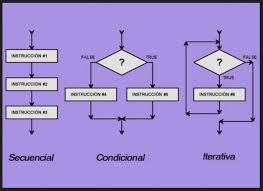

Hola!, somos Ayudemos Ya!
Nosotros te
En Ayudemos Ya queremos escucharte. Tus ideas, preguntas y propuestas son esenciales para seguir construyendo un movimiento que inspire más acciones por el planeta. Si tienes dudas, deseas colaborar o simplemente quieres sumar tu voz, este es el espacio para ti.
Escríbenos y formemos juntos la red de personas que creen en un futuro más verde. Porque cuidar el medio ambiente no es tarea de unos cuantos, es una misión compartida.
Numeros de telefono
Ubicación
Formulario
¿Qué es python?
Python es un lenguaje de programación de alto nivel, interpretado, de
propósito general y con una sintaxis clara, sencilla y elegante. Fue
creado por Guido van Rossum y lanzado por primera vez en 1991. Desde
entonces, se ha convertido en uno de los lenguajes más populares del
mundo debido a su facilidad de uso, su enorme comunidad y su
versatilidad. Una de las características más distintivas de Python es
su sintaxis simple y legible, que permite escribir menos líneas de
código para hacer más cosas en comparación con otros lenguajes como
Java o C++.
Python está diseñado para ser intuitivo y accesible, incluso para
personas sin experiencia previa en programación, lo cual lo convierte
en una excelente opción para principiantes. Sin embargo, no se queda
corto en capacidades avanzadas, y es ampliamente utilizado en el
desarrollo profesional. Python es un lenguaje multiparadigma, lo que
significa que permite la programación orientada a objetos, imperativa
y funcional. Además, cuenta con una enorme cantidad de bibliotecas y
frameworks que amplían sus capacidades, como NumPy y pandas para
ciencia de datos, Flask y Django para desarrollo web, PyTorch y
TensorFlow para inteligencia artificial, y muchos más. Se puede usar
en múltiples plataformas (Windows, Mac, Linux), es de código abierto y
tiene un entorno de desarrollo activo, por lo que siempre está
evolucionando. Gracias a su gran comunidad, existe una vasta cantidad
de recursos en línea como tutoriales, foros, documentación, cursos y
proyectos open source.
Razones para aprenderlo
Es fácil de aprender y entender
Python tiene una sintaxis limpia y cercana al lenguaje humano, lo que
lo hace ideal para quienes están empezando a programar. Puedes
enfocarte en la lógica del programa sin preocuparte tanto por la
estructura o la complejidad del lenguaje.
Es muy versátil
Python se usa en muchas áreas como desarrollo web, automatización,
análisis de datos, inteligencia artificial, ciberseguridad,
videojuegos, Internet de las Cosas (IoT), fintech y mucho más.
Aprender Python abre puertas a múltiples campos profesionales.
Tiene una gran demanda laboral
Las empresas de tecnología, banca, ciencia, salud y educación
constantemente buscan desarrolladores con conocimientos en Python.
Aprenderlo puede aumentar tus oportunidades de empleo y crecimiento
profesional.
Cuenta con una comunidad enorme
Si te atoras, hay una buena probabilidad de que alguien ya haya tenido
el mismo problema. Gracias a su comunidad global, puedes encontrar
ayuda fácilmente en foros como Stack Overflow, Reddit, GitHub o
incluso en cursos gratuitos en línea.
Te ayuda a aprender otros lenguajes más fácilmente
Python te enseña las bases de la programación moderna. Una vez que
dominas Python, puedes aprender otros lenguajes como JavaScript, Java
o C++ con mayor facilidad, ya que ya entiendes los conceptos clave.
Ideal para automatizar tareas y ahorrar tiempo
Puedes usar Python para automatizar procesos repetitivos, como mover
archivos, limpiar datos o manejar correos electrónicos. Esto lo hace
muy útil en trabajos administrativos o técnicos.
Es el lenguaje más usado en ciencia de datos e inteligencia artificial
Si te interesa el futuro de la tecnología, Python es la herramienta
principal en áreas como machine learning, big data y procesamiento de
lenguaje natural.
Aprendelo ya!
Temario
En este curso de Python
Python
Aprenderas sobre
En esta ruta que Programacion para estudiantes hemos diseñado,
es bueno aprender Python empezando por mostrar cosas en la terminal porque es la forma más simple de ver resultados inmediatos y entender cómo funciona el programa. Luego, aprender variables permite guardar y manipular datos, lo cual es básico para cualquier programa. Después, las estructuras de control ayudan a que el código tome decisiones y repita acciones, haciendo los programas más dinámicos.
Más adelante, las funciones facilitan organizar el código, evitar repeticiones y mejorar su claridad, mientras que las clases introducen la programación orientada a objetos, que permite crear modelos más complejos y estructurados para proyectos grandes. Así, esta ruta va de lo más sencillo a lo más avanzado, ayudando a construir una base sólida y progresiva en Python.
Terminal
Variables
Estrucucturas de control
Funciones
Clases
¿Qué es la terminal?
La terminal de Python, también conocida como intérprete interactivo, es una herramienta donde puedes escribir y ejecutar código Python línea por línea. Permite probar comandos rápidamente, ver resultados al instante y experimentar con el lenguaje sin necesidad de crear un archivo. Es muy útil para aprender, depurar errores o hacer pruebas rápidas, ya que responde inmediatamente a cada instrucción que escribes.
Siguiente
Atras
¿Qué son las variables?
En Python, una variable es un nombre que se utiliza para referenciar un valor almacenado en la memoria de la computadora. Es como una etiqueta que permite acceder y manipular datos de forma sencilla. Python es un lenguaje de tipado dinámico, lo que significa que no es necesario declarar el tipo de dato de una variable al crearla; el tipo se determina automáticamente según el valor que se le asigne.
Practicalo ya
Interger (Int)
Se usa para representar números enteros, positivos o negativos, sin decimales. Ejemplos: 5, -12, 0. Son útiles para contar cosas, realizar sumas, restas, divisiones enteras, etc.
Float
Representa números reales con decimales. Ejemplos: 3.14, -0.5, 100.0. Se usan cuando necesitas mayor precisión en operaciones matemáticas, como promedios, medidas o porcentajes.
Boolean
Solo puede tener dos valores: True (verdadero) o False (falso). Se usa principalmente en condiciones y comparaciones, como en estructuras if, para tomar decisiones en el programa.
String (Str)
Guarda texto entre comillas, ya sean palabras, frases o símbolos. Ejemplos: "Hola", "123", "Python es genial". Puedes hacer operaciones como unir cadenas, contar letras, buscar palabras, etc.
Siguiente
Atras

¿Qué son las estructuras de control?
Las estructuras de control en Python permiten alterar el flujo normal de un programa, es decir, decidir qué instrucciones se ejecutan y cuántas veces. Gracias a ellas, los programas pueden responder a condiciones y repetir acciones, lo que los hace más útiles y dinámicos.
Practicalo ya
Estrucutra Secuencial
La estructura secuencial es la forma más básica en la que se ejecuta un programa. Consiste en que las instrucciones se ejecutan una tras otra, en el orden en que están escritas, de arriba hacia abajo. No hay condiciones ni repeticiones, simplemente cada línea se ejecuta una vez de forma directa. Es el primer tipo de estructura que se aprende y la base sobre la que se construyen las demás.
Estructura Condicional
Las estructuras de control condicionales permiten a los programas tomar decisiones basadas en ciertas condiciones, ejecutando diferentes bloques de código dependiendo de si una condición es verdadera o falsa. Estas estructuras son fundamentales para la lógica de cualquier programa y permiten que este reaccione a diferentes situaciones. Las principales estructuras condicionales son if, if/else y switch
- If (Simple): Ejecuta un bloque de código si una condición es verdadera. Si la condición es falsa, el bloque se omite y el programa continúa con la siguiente instrucción.
- If/else (Compuesta): Permite ejecutar un bloque de código si la condición es verdadera y otro bloque si la condición es falsa.
- Switch (Múltiple): Evalúa una variable y ejecuta un bloque de código específico dependiendo del valor de esa variable. Cada bloque está asociado a un valor diferente de la variable
Estructura Ciclica
Las estructuras de control cíclicas, también conocidas como bucles o estructuras repetitivas, permiten ejecutar un bloque de código varias veces, ya sea un número específico de veces o hasta que se cumpla una condición. Las más comunes son for, while y do-while.
- For:
Se utiliza cuando se conoce el número exacto de iteraciones que se deben realizar. Requiere un contador, una condición de finalización y una actualización del contador en cada iteración.
- While:
Se utiliza cuando no se conoce el número exacto de iteraciones, pero se sabe que el bucle debe continuar mientras se cumpla una condición. La condición se evalúa antes de cada iteración
- Do-While:
Similar a while, pero la condición se evalúa después de cada iteración. Esto asegura que el bloque de código se ejecute al menos una vez, incluso si la condición es falsa desde el principio
Siguiente
Atras
¿Qué son las Funciones?
En Python, una función es un bloque de código reutilizable que realiza una tarea específica. Se define con la palabra clave def, seguida del nombre de la función, paréntesis para los argumentos, y dos puntos. Las funciones pueden recibir argumentos de entrada, realizar cálculos, y devolver un valor de salida con la sentencia return
Practicalo ya
Parametros
Parámetros: Son los nombres que se utilizan dentro de la definición de la función para referirse a los valores que se pasan a la función.
Argumentos
Argumentos: Son los valores que se pasan a la función cuando se llama.
Siguiente
Atras
¿Qué son las clases?
En Python, una clase es un modelo para crear objetos. Es una estructura que define atributos (datos) y métodos (funciones) que un objeto puede tener. Los objetos son instancias de una clase.
Una clase es como un plano para crear objetos. Define la estructura y el comportamiento que tendrán todos los objetos creados a partir de ella. Por ejemplo, una clase "Perro" podría definir atributos como "raza" y "edad", y métodos como "ladrar" o "comer
Practicalo ya
Clases
Son plantillas para crear objetos. Definen la estructura y el comportamiento de los objetos que se crearán a partir de ellas.
Objetos
Son instancias de una clase. Representan entidades concretas con atributos y métodos específicos.
Encapsulamiento
Oculta los detalles internos de un objeto y expone solo una interfaz pública para interactuar con él.
Herencia
Permite que una clase (subclase) herede atributos y métodos de otra clase (superclase), promoviendo la reutilización de código.
Polimorfismo
Permite que objetos de diferentes clases respondan al mismo mensaje de diferentes maneras, adaptando su comportamiento.
Abstracción
Permite enfocarse en las características esenciales de un objeto sin preocuparse por los detalles irrelevante
Atras
Ejercicios de practica
Dentro de los ejercicios de practica que hemos preparado aqui tieners una lista para acceder al que quieras ir!
Terminal
Variables
Estrucucturas de control
Funciones
Clases
Si quieres hacer ejercicios sin ver la forma de resolverlos ve a aca
Ejercicios a resolver
Terminal
Para imprimir un mensaje en la terminal, se usa la función print():
print("¡Hola, mundo!")
El comando print nos servira para muchas cosas ya que junto a este se nos permitira imprimir cualquier tipo de cosa mediante la terminal que nos da visual estudio code
Mas ejemplos de este tipo
Aqui se imprimira el nombre "Jesús"
print("Hola me llamo Jesús")
Aqui se respondera a una suma
print("El resultado de tu suma es >= 10")
Aqui preguntaremos al usuario si es que necesita algo mas
print("Necesitas algo mas?")
print("¡Hola, bienvenido a nuestro sistema!")
Aquí mostramos un mensaje de bienvenida
print("Esperamos que tengas un gran día.")
print("Introduce tu nombre para continuar:")
Aquí solicitamos el nombre del usuario
print("Gracias por proporcionar tu nombre.")
print("Cargando datos, por favor espera...")
Aquí informamos al usuario sobre el estado del sistema
print("Carga completada con éxito.")
print("Selecciona una opción del menú:")
Aquí mostramos las opciones disponibles
print("1. Ver perfil | 2. Editar perfil | 3. Cerrar sesión")
print("Has cerrado sesión correctamente.")
Aquí confirmamos que el usuario ha salido del sistema
print("Vuelve pronto.")
Link para saber mas sobre el como mostrar info en la terminal
Regresar al centro de ejercicios
Variables en Python
nombre = "Jesús" (String)
edad = 20 (Int)
precio = 19.99 (Float)
x = 0 (Boobleanos)
Aqui te mostramos un pequeño ejemplo sobre que tipo de variables existen, como puedes ver al lado de ellas aparece que tipo de variable son
Mas ejemplos de este tipo
mensaje_despedida = "Esperamos que tengas un gran día."
edad_usuario = 25
Aquí almacenamos la edad del usuario
cantidad_productos = 10
precio_producto = 49.99
Aquí almacenamos el precio de un producto
total_compra = 5 * precio_producto
usuario_activo = True
Aquí verificamos si el usuario está activo
permisos_admin = False
temperatura_actual = 22.5
Aquí almacenamos la temperatura actual
porcentaje_descuento = 15.0
Link para saber mas sobre el uso de variables en python
Regresar al centro de ejercicios
Estrucutra Secuencial
print("Hola, este es un programa secuencial")
nombre = "Jesús"
edad = 15
print("Mi nombre es", nombre)
print("Tengo", edad, "años")
En este ejemplo mostramos cómo se ejecutan las instrucciones una tras otra, sin saltos ni repeticiones.
numero1 = 10
numero2 = 20
suma = numero1 + numero2
print("La suma es:", suma)
Aquí hacemos una suma sencilla, siguiendo paso a paso la secuencia de instrucciones.
base = 5
altura = 8
area = base * altura
print("El área del rectángulo es:", area)
Ejemplo para calcular el área de un rectángulo, con instrucciones que se ejecutan secuencialmente.
celsius = 25
fahrenheit = (celsius * 9/5) + 32
print(celsius, "grados Celsius son", fahrenheit, "grados Fahrenheit")
Conversión de temperatura con pasos secuenciales, sin condiciones ni ciclos.
Estructura Condicional
edad = 18
if edad >= 18:
print("Eres mayor de edad.")
Aquí verificamos si una persona es mayor de edad
Mas ejemplos de este tipo
temperatura = 30
if temperatura > 25:
print("Hace calor hoy.")
numero = 0
if numero > 0:
print("El número es positivo.")
elif numero < 0:
print("El número es negativo.")
else:
print("El número es cero.")
Aquí verificamos si un número es positivo, negativo o cero
hora = 15
if hora < 12:
print("Buenos días.")
elif hora < 18:
print("Buenas tardes.")
else:
print("Buenas noches.")
contraseña = "secreto123"
if contraseña == "secreto123":
print("Acceso concedido.")
else:
print("Acceso denegado.")
Aquí verificamos si la contraseña ingresada es correcta
numero = 8
if numero % 2 == 0:
print("El número es par.")
else:
print("El número es impar.")
usuario_premium = True
if usuario_premium:
print("Tienes acceso a contenido exclusivo.")
Aquí verificamos si un usuario es premium para darle acceso especial
stock = 5
cantidad_deseada = 3
if cantidad_deseada <= stock:
print("Pedido confirmado.")
else:
print("Stock insuficiente.")
Estrucuctura Ciclica
for i in range(5):
print("Iteración", i)
Mas ejemplos de este tipo
for i in range(5):
print("Iteración número:", i)
Aquí recorremos un bucle for con 5 iteraciones
for letra in "Python":
print("Letra:", letra)
Aqui con una palabra que escribamos se nos pondran las letras
contador = 0
while contador < 3:
print("Contador:", contador)
contador += 1
Aquí usamos un bucle while para contar hasta 2
num = 10
while num >= 5:
print("Número:", num)
num -= 1
for numero in range(2, 11, 2):
print("Número par:", numero)
Aquí usamos un for para mostrar números pares del 2 al 10
for x in range(3):
print("Hola, esta es la repetición", x + 1)
suma = 0
for i in range(1, 6):
suma += i
Aquí sumamos los números del 1 al 5 usando for
multiplicador = 1
while multiplicador <= 5:
resultado = multiplicador * 2
multiplicador += 1
Link para saber mas sobre los bucles
Regresar al centro de ejercicios
Funciones
def miprimerafuncion():
pass
miprimerafuncion()
Aqui como puedes ver se crea la funcion, "miprimerafuncion" para despues ser llamada
Mas ejemplos de este tipo
def saludo():
print("¡Hola, bienvenido!")
saludo()
Aquí definimos y llamamos a una función que muestra un saludo
def sumar(a, b):
return a + b
resultado = sumar(5, 3)
def es_par(numero):
return numero % 2 == 0
numero_verificado = 10
resultado_par = es_par(numero_verificado)
Aquí definimos una función que verifica si un número es par y la usamos
def obtener_mensaje():
return "Este es un mensaje desde una función."
mensaje = obtener_mensaje()
def contar_hasta(n):
for i in range(1, n + 1):
print(i)
contar_hasta(5)
Aquí definimos y llamamos a una función que cuenta hasta un número dado
def calcular_area_circulo(radio):
pi = 3.1416
return pi * radio * radio
area = calcular_area_circulo(4)
def repetir_palabra(palabra, veces):
for _ in range(veces):
print(palabra)
repetir_palabra("Python", 3)
Aquí definimos y llamamos a una función que repite una palabra varias veces
def verificar_mayor(edad):
return edad >= 18
mayor_de_edad = verificar_mayor(20)
Link para saber mas sobre el uso de bucles
Regresar al centro de ejercicios
Clases
class Persona:
pass
persona1 = Persona()
Ejemplo básico de creación de una clase vacía y una instancia u objeto.
class Persona:
def __init__(self, nombre, edad):
self.nombre = nombre
self.edad = edad
persona1 = Persona("Jesús", 15)
La función __init__ inicializa los atributos cuando se crea el objeto.
class Persona:
def __init__(self, nombre, edad):
self.nombre = nombre
self.edad = edad
def mostrar_datos(self):
print(f"Nombre: {self.nombre}, Edad: {self.edad}")
persona1 = Persona("Jesús", 15)
persona1.mostrar_datos()
El método mostrar_datos abstrae la forma en que mostramos la información del objeto.
class Persona:
def __init__(self, nombre, edad):
self.nombre = nombre
self.edad = edad
persona1 = Persona("Jesús", 15)
persona2 = Persona("Ana", 20)
Cada objeto tiene su propio estado independiente.
class Persona:
def __init__(self, nombre, edad):
self.__nombre = nombre
self.edad = edad
def get_nombre(self):
return self.__nombre
persona1 = Persona("Jesús", 15)
print(persona1.get_nombre())
Los atributos privados no se acceden directamente, sino mediante métodos públicos.
class Estudiante(Persona):
def __init__(self, nombre, edad, carrera):
super().__init__(nombre, edad)
self.carrera = carrera
estudiante1 = Estudiante("Jesús", 15, "Ingeniería")
estudiante1.mostrar_datos()
La clase Estudiante hereda atributos y métodos de Persona.
class Persona:
def saludar(self):
print("Hola, soy una persona")
class Estudiante(Persona):
def saludar(self):
print("Hola, soy un estudiante")
p = Persona()
e = Estudiante()
p.saludar()
e.saludar()
El método saludar se comporta diferente según el objeto.
class CuentaBancaria:
def __init__(self, titular, saldo=0):
self.titular = titular
self.saldo = saldo
def depositar(self, cantidad):
self.saldo += cantidad
def retirar(self, cantidad):
if cantidad <= self.saldo:
self.saldo -= cantidad
def mostrar_saldo(self):
print(f"Saldo de {self.titular}: {self.saldo}")
cuenta1 = CuentaBancaria("Jesús", 1000)
cuenta1.depositar(500)
cuenta1.retirar(200)
cuenta1.mostrar_saldo()
Clase con atributos y métodos para manejar una cuenta bancaria básica.
class Vehiculo:
def __init__(self, marca, modelo):
self.marca = marca
self.modelo = modelo
def mostrar_info(self):
print(f"Vehículo: {self.marca} {self.modelo}")
class Auto(Vehiculo):
def __init__(self, marca, modelo, puertas):
super().__init__(marca, modelo)
self.puertas = puertas
def mostrar_info(self):
print(f"Auto: {self.marca} {self.modelo}, Puertas: {self.puertas}")
auto1 = Auto("Toyota", "Corolla", 4)
auto1.mostrar_info()
Herencia y método sobrescrito para clases de vehículos.
from abc import ABC, abstractmethod
class Figura(ABC):
@abstractmethod
def area(self):
pass
class Circulo(Figura):
def __init__(self, radio):
self.radio = radio
def area(self):
return 3.1416 * self.radio ** 2
circulo1 = Circulo(5)
print(f"Área del círculo: {circulo1.area()}")
Ejemplo de clase abstracta y método abstracto usando el módulo abc.
Link para saber mas sobre el uso de clases en python
Regresar al centro de ejercicios
Ejercicios a resolver
Terminal
- 1. Escribe un programa que muestre tu nombre completo y tu edad.
- 2. Imprime un mensaje de bienvenida seguido de una línea con tu comida favorita.
- 3. Muestra en pantalla una cita o frase que te guste, usando saltos de línea.
Variables
- 1. Declara tres variables: una para tu edad, otra para tu altura y una tercera con tu nombre. Imprímelas.
- 2. Realiza una operación matemática con dos variables (suma, resta, etc.) e imprime el resultado.
- 3. Crea un programa que calcule el área de un triángulo usando base y altura.
Estructuras de control
Secuenciales
- 1. Sumar dos números: Escribir un programa que pida al usuario dos números, los sume y muestre el resultado.
- 2. Calcular el área de un rectángulo: Solicitar al usuario la base y la altura, calcular el área (base × altura) y mostrar el resultado.
- 3. Convertir grados Celsius a Fahrenheit: Pedir al usuario una temperatura en grados Celsius, convertirla a Fahrenheit usando la fórmula F = (C × 9/5) + 32 y mostrar el resultado.
Condicionales
- 1. Escribe un programa que determine si una persona es mayor de edad.
- 2. Pide al usuario una calificación y muestra si pasó o no (>= 6).
- 3. Verifica si un número es positivo, negativo o cero.
Ciclicas
- 1. Muestra los números del 1 al 20 usando un bucle
for.
- 2. Escribe un programa que muestre la tabla de multiplicar del 5 usando un
while.
- 3. Pide al usuario un número y muestra desde ese número hasta cero.
Funciones
- 1. Crea una función que reciba tu nombre y lo imprima con un saludo.
- 2. Haz una función que reciba dos números y devuelva su suma.
- 3. Escribe una función que determine si un número es par o impar.
Clases
- 1. Crear una clase Persona con atributos nombre y edad. Crear un objeto y mostrar sus datos.
- 2. Agregar un método saludar en la clase Persona que imprima un saludo personalizado.
- 3. Modificar la clase para que los atributos nombre y edad sean privados y crear métodos para obtener y modificar esos valores.
- 4. Crear una clase Estudiante que herede de Persona y agregue un atributo carrera. Instanciar y mostrar todos los datos.
- 5. Crear dos clases Perro y Gato con un método común hacer_sonido() que imprima un sonido diferente en cada clase.
- 6. Crear una clase abstracta Figura con un método area() sin implementación y crear clases Rectángulo y Círculo que hereden y definan ese método.
- 7. Agregar un constructor en la clase Rectángulo que reciba base y altura para inicializar los atributos.
- 8. Crear una clase CuentaBancaria con atributos privados y métodos para depositar, retirar y mostrar el saldo.
- 9. Crear una clase Vehículo con atributos y métodos generales y luego clases hijas como Auto y Motocicleta que amplíen sus funcionalidades.
Regresar al temario